sessionInfo()Biostat 203B Homework 2
Due Feb 10 @ 11:59PM
Display machine information for reproducibility:
Load necessary libraries (you can add more as needed).
library(data.table)
library(lubridate)
library(R.utils)
library(stringr)
library(tidyverse)
library(ggpubr)
library(cowplot)MIMIC data location
mimic_path <- "~/mimic"In this exercise, we use tidyverse (ggplot2, dplyr, etc) to explore the MIMIC-IV data introduced in homework 1 and to build a cohort of ICU stays.
Display the contents of MIMIC data folder.
system(str_c("ls -l ", mimic_path, "/"), intern = TRUE)[1] "total 32"
[2] "-rw-r--r-- 1 arthu arthu 2518 Mar 10 2021 LICENSE.txt"
[3] "drwxr-xr-x 1 arthu arthu 0 Jan 27 17:06 MIMIC-reduce-chartevents"
[4] "-rw-r--r-- 1 arthu arthu 2459 Mar 16 2021 SHA256SUMS.txt"
[5] "drwxr-xr-x 1 arthu arthu 0 Jan 27 17:05 core"
[6] "drwxr-xr-x 1 arthu arthu 0 Jan 27 17:06 hosp"
[7] "drwxr-xr-x 1 arthu arthu 0 Jan 27 17:06 icu"
[8] "-rw-r--r-- 1 arthu arthu 797 Jan 4 2022 index.html" system(str_c("ls -l ", mimic_path, "/core"), intern = TRUE)[1] "total 71469"
[2] "-rw-r--r-- 1 arthu arthu 17208966 Mar 15 2021 admissions.csv.gz"
[3] "-rw-r--r-- 1 arthu arthu 606 Jan 4 2022 index.html"
[4] "-rw-r--r-- 1 arthu arthu 2955582 Mar 15 2021 patients.csv.gz"
[5] "-rw-r--r-- 1 arthu arthu 53014503 Mar 15 2021 transfers.csv.gz" system(str_c("ls -l ", mimic_path, "/hosp"), intern = TRUE) [1] "total 4621592"
[2] "-rw-r--r-- 1 arthu arthu 430049 Mar 15 2021 d_hcpcs.csv.gz"
[3] "-rw-r--r-- 1 arthu arthu 863239 Mar 15 2021 d_icd_diagnoses.csv.gz"
[4] "-rw-r--r-- 1 arthu arthu 579998 Mar 15 2021 d_icd_procedures.csv.gz"
[5] "-rw-r--r-- 1 arthu arthu 14898 Mar 15 2021 d_labitems.csv.gz"
[6] "-rw-r--r-- 1 arthu arthu 29531152 Mar 15 2021 diagnoses_icd.csv.gz"
[7] "-rw-r--r-- 1 arthu arthu 11684062 Mar 15 2021 drgcodes.csv.gz"
[8] "-rw-r--r-- 1 arthu arthu 515763427 Mar 15 2021 emar.csv.gz"
[9] "-rw-r--r-- 1 arthu arthu 476252563 Mar 15 2021 emar_detail.csv.gz"
[10] "-rw-r--r-- 1 arthu arthu 2098831 Mar 15 2021 hcpcsevents.csv.gz"
[11] "-rw-r--r-- 1 arthu arthu 2325 Jan 4 2022 index.html"
[12] "-rw-r--r-- 1 arthu arthu 2091865786 Mar 15 2021 labevents.csv.gz"
[13] "-rw-r--r-- 1 arthu arthu 171624288 Jan 27 2022 labevents_filtered_itemid.csv.gz"
[14] "-rw-r--r-- 1 arthu arthu 99133381 Mar 15 2021 microbiologyevents.csv.gz"
[15] "-rw-r--r-- 1 arthu arthu 422874088 Mar 15 2021 pharmacy.csv.gz"
[16] "-rw-r--r-- 1 arthu arthu 501381155 Mar 15 2021 poe.csv.gz"
[17] "-rw-r--r-- 1 arthu arthu 24020923 Mar 15 2021 poe_detail.csv.gz"
[18] "-rw-r--r-- 1 arthu arthu 367041717 Mar 15 2021 prescriptions.csv.gz"
[19] "-rw-r--r-- 1 arthu arthu 7750325 Mar 15 2021 procedures_icd.csv.gz"
[20] "-rw-r--r-- 1 arthu arthu 9565293 Mar 15 2021 services.csv.gz" system(str_c("ls -l ", mimic_path, "/icu"), intern = TRUE) [1] "total 2849004"
[2] "-rw-r--r-- 1 arthu arthu 2350783547 Mar 15 2021 chartevents.csv.gz"
[3] "-rw-r--r-- 1 arthu arthu 110272408 Jan 27 2022 chartevents_filtered_itemid.csv.gz"
[4] "-rw-r--r-- 1 arthu arthu 55917 Mar 15 2021 d_items.csv.gz"
[5] "-rw-r--r-- 1 arthu arthu 43296273 Mar 15 2021 datetimeevents.csv.gz"
[6] "-rw-r--r-- 1 arthu arthu 2848628 Mar 15 2021 icustays.csv.gz"
[7] "-rw-r--r-- 1 arthu arthu 1103 Jan 4 2022 index.html"
[8] "-rw-r--r-- 1 arthu arthu 352443512 Mar 15 2021 inputevents.csv.gz"
[9] "-rw-r--r-- 1 arthu arthu 37095672 Mar 15 2021 outputevents.csv.gz"
[10] "-rw-r--r-- 1 arthu arthu 20567368 Mar 15 2021 procedureevents.csv.gz" 1 Q1. read.csv (base R) vs read_csv (tidyverse) vs fread (data.table)
There are quite a few utilities in R for reading plain text data files. Let us test the speed of reading a moderate sized compressed csv file, admissions.csv.gz, by three programs: read.csv in base R, read_csv in tidyverse, and fread in the popular data.table package.
Which function is fastest? Is there difference in the (default) parsed data types? (Hint: R function system.time measures run times.)
For later questions, we stick to the read_csv in tidyverse.
Check contents of icustays.csv
zcat < ~/mimic/icu/icustays.csv.gz | head -n "10"subject_id,hadm_id,stay_id,first_careunit,last_careunit,intime,outtime,los
17867402,24528534,31793211,Trauma SICU (TSICU),Trauma SICU (TSICU),2154-03-03 04:11:00,2154-03-04 18:16:56,1.5874537037037035
14435996,28960964,31983544,Trauma SICU (TSICU),Trauma SICU (TSICU),2150-06-19 17:57:00,2150-06-22 18:33:54,3.025625
17609946,27385897,33183475,Trauma SICU (TSICU),Trauma SICU (TSICU),2138-02-05 18:54:00,2138-02-15 12:42:05,9.741724537037038
18966770,23483021,34131444,Trauma SICU (TSICU),Trauma SICU (TSICU),2123-10-25 10:35:00,2123-10-25 18:59:47,0.35054398148148147
12776735,20817525,34547665,Neuro Stepdown,Neuro Stepdown,2200-07-12 00:33:00,2200-07-13 16:44:40,1.6747685185185184
10215159,24283593,34569476,Trauma SICU (TSICU),Trauma SICU (TSICU),2124-09-20 15:05:29,2124-09-21 22:06:58,1.2926967592592593
14489052,26516390,35056286,Trauma SICU (TSICU),Trauma SICU (TSICU),2118-10-26 10:33:56,2118-10-26 20:28:10,0.4126620370370371
15914763,28906020,36909804,Trauma SICU (TSICU),Trauma SICU (TSICU),2176-12-14 12:00:00,2176-12-17 11:47:01,2.9909837962962964
16256226,20013290,39289362,Neuro Stepdown,Neuro Stepdown,2150-12-20 16:09:08,2150-12-21 14:58:40,0.9510648148148149system.time({
base <- read.csv(str_c(mimic_path, "/icu/icustays.csv.gz"))
}) user system elapsed
2.05 0.09 2.14 system.time({
dplyr <- read_csv(str_c(mimic_path, "/icu/icustays.csv.gz"))
}) user system elapsed
3.86 0.67 2.45 system.time({
fread <- icu_fread <- fread(str_c(mimic_path, "/icu/icustays.csv.gz"))
}) user system elapsed
0.61 0.25 0.77 Answer: According to the system.time results, fread function takes the least time, followed by the base function read.csv, and read_csv in dplyr takes the most time reading the csv file. Check data types
str(base)'data.frame': 76540 obs. of 8 variables:
$ subject_id : int 17867402 14435996 17609946 18966770 12776735 10215159 14489052 15914763 16256226 19194449 ...
$ hadm_id : int 24528534 28960964 27385897 23483021 20817525 24283593 26516390 28906020 20013290 21641999 ...
$ stay_id : int 31793211 31983544 33183475 34131444 34547665 34569476 35056286 36909804 39289362 39387567 ...
$ first_careunit: chr "Trauma SICU (TSICU)" "Trauma SICU (TSICU)" "Trauma SICU (TSICU)" "Trauma SICU (TSICU)" ...
$ last_careunit : chr "Trauma SICU (TSICU)" "Trauma SICU (TSICU)" "Trauma SICU (TSICU)" "Trauma SICU (TSICU)" ...
$ intime : chr "2154-03-03 04:11:00" "2150-06-19 17:57:00" "2138-02-05 18:54:00" "2123-10-25 10:35:00" ...
$ outtime : chr "2154-03-04 18:16:56" "2150-06-22 18:33:54" "2138-02-15 12:42:05" "2123-10-25 18:59:47" ...
$ los : num 1.587 3.026 9.742 0.351 1.675 ...The types of data in the base data frame are “chr” “num” or “int”
str(dplyr)spc_tbl_ [76,540 × 8] (S3: spec_tbl_df/tbl_df/tbl/data.frame)
$ subject_id : num [1:76540] 17867402 14435996 17609946 18966770 12776735 ...
$ hadm_id : num [1:76540] 24528534 28960964 27385897 23483021 20817525 ...
$ stay_id : num [1:76540] 31793211 31983544 33183475 34131444 34547665 ...
$ first_careunit: chr [1:76540] "Trauma SICU (TSICU)" "Trauma SICU (TSICU)" "Trauma SICU (TSICU)" "Trauma SICU (TSICU)" ...
$ last_careunit : chr [1:76540] "Trauma SICU (TSICU)" "Trauma SICU (TSICU)" "Trauma SICU (TSICU)" "Trauma SICU (TSICU)" ...
$ intime : POSIXct[1:76540], format: "2154-03-03 04:11:00" "2150-06-19 17:57:00" ...
$ outtime : POSIXct[1:76540], format: "2154-03-04 18:16:56" "2150-06-22 18:33:54" ...
$ los : num [1:76540] 1.587 3.026 9.742 0.351 1.675 ...
- attr(*, "spec")=
.. cols(
.. subject_id = col_double(),
.. hadm_id = col_double(),
.. stay_id = col_double(),
.. first_careunit = col_character(),
.. last_careunit = col_character(),
.. intime = col_datetime(format = ""),
.. outtime = col_datetime(format = ""),
.. los = col_double()
.. )
- attr(*, "problems")=<externalptr> In the read_csv version, the intime and outtime variables are coded into POSIXct format, while in the base version they were just character variables. In addition, there are no “int” and “num difference” in this dataframe, they are both “double” format.
str(fread)Classes 'data.table' and 'data.frame': 76540 obs. of 8 variables:
$ subject_id : int 17867402 14435996 17609946 18966770 12776735 10215159 14489052 15914763 16256226 19194449 ...
$ hadm_id : int 24528534 28960964 27385897 23483021 20817525 24283593 26516390 28906020 20013290 21641999 ...
$ stay_id : int 31793211 31983544 33183475 34131444 34547665 34569476 35056286 36909804 39289362 39387567 ...
$ first_careunit: chr "Trauma SICU (TSICU)" "Trauma SICU (TSICU)" "Trauma SICU (TSICU)" "Trauma SICU (TSICU)" ...
$ last_careunit : chr "Trauma SICU (TSICU)" "Trauma SICU (TSICU)" "Trauma SICU (TSICU)" "Trauma SICU (TSICU)" ...
$ intime : POSIXct, format: "2154-03-03 04:11:00" "2150-06-19 17:57:00" ...
$ outtime : POSIXct, format: "2154-03-04 18:16:56" "2150-06-22 18:33:54" ...
$ los : num 1.587 3.026 9.742 0.351 1.675 ...
- attr(*, ".internal.selfref")=<externalptr> The fread version is kind of in between the previous ones. It also codes the ‘intime’ ‘outtime’ into POSIXct format but it still has int and num difference.
2 Q2. ICU stays
icustays.csv.gz (https://mimic.mit.edu/docs/iv/modules/icu/icustays/) contains data about Intensive Care Units (ICU) stays. The first 10 lines are
zcat < ~/mimic/icu/icustays.csv.gz | head -n "10"subject_id,hadm_id,stay_id,first_careunit,last_careunit,intime,outtime,los
17867402,24528534,31793211,Trauma SICU (TSICU),Trauma SICU (TSICU),2154-03-03 04:11:00,2154-03-04 18:16:56,1.5874537037037035
14435996,28960964,31983544,Trauma SICU (TSICU),Trauma SICU (TSICU),2150-06-19 17:57:00,2150-06-22 18:33:54,3.025625
17609946,27385897,33183475,Trauma SICU (TSICU),Trauma SICU (TSICU),2138-02-05 18:54:00,2138-02-15 12:42:05,9.741724537037038
18966770,23483021,34131444,Trauma SICU (TSICU),Trauma SICU (TSICU),2123-10-25 10:35:00,2123-10-25 18:59:47,0.35054398148148147
12776735,20817525,34547665,Neuro Stepdown,Neuro Stepdown,2200-07-12 00:33:00,2200-07-13 16:44:40,1.6747685185185184
10215159,24283593,34569476,Trauma SICU (TSICU),Trauma SICU (TSICU),2124-09-20 15:05:29,2124-09-21 22:06:58,1.2926967592592593
14489052,26516390,35056286,Trauma SICU (TSICU),Trauma SICU (TSICU),2118-10-26 10:33:56,2118-10-26 20:28:10,0.4126620370370371
15914763,28906020,36909804,Trauma SICU (TSICU),Trauma SICU (TSICU),2176-12-14 12:00:00,2176-12-17 11:47:01,2.9909837962962964
16256226,20013290,39289362,Neuro Stepdown,Neuro Stepdown,2150-12-20 16:09:08,2150-12-21 14:58:40,0.9510648148148149- Import
icustatys.csv.gzas a tibbleicustays_tble.
icustays_tble <- read_csv(str_c(mimic_path, "/icu/icustays.csv.gz"))- How many unique
subject_id? Can asubject_idhave multiple ICU stays?
nrow(icustays_tble)[1] 76540length(unique(icustays_tble$subject_id))[1] 53150icustays_tble %>%
group_by(subject_id) %>%
summarise(nstays = n()) %>%
head()# A tibble: 6 × 2
subject_id nstays
<dbl> <int>
1 10000032 1
2 10000980 1
3 10001217 2
4 10001725 1
5 10001884 1
6 10002013 1There are in total 76,540 columns and 53150 unique subject_id. So, a single subject_id can have multiple stays, such as in the above head() table, the patients with subject id 10001217 has two icu stays.
- Summarize the number of ICU stays per
subject_idby graphs.
stay_times <- icustays_tble %>%
group_by(subject_id) %>%
summarise(nstays = n()) %>%
arrange(nstays)
hist(stay_times$nstays,
main = 'Distribution of stay_times',
xlab = 'Number of patients')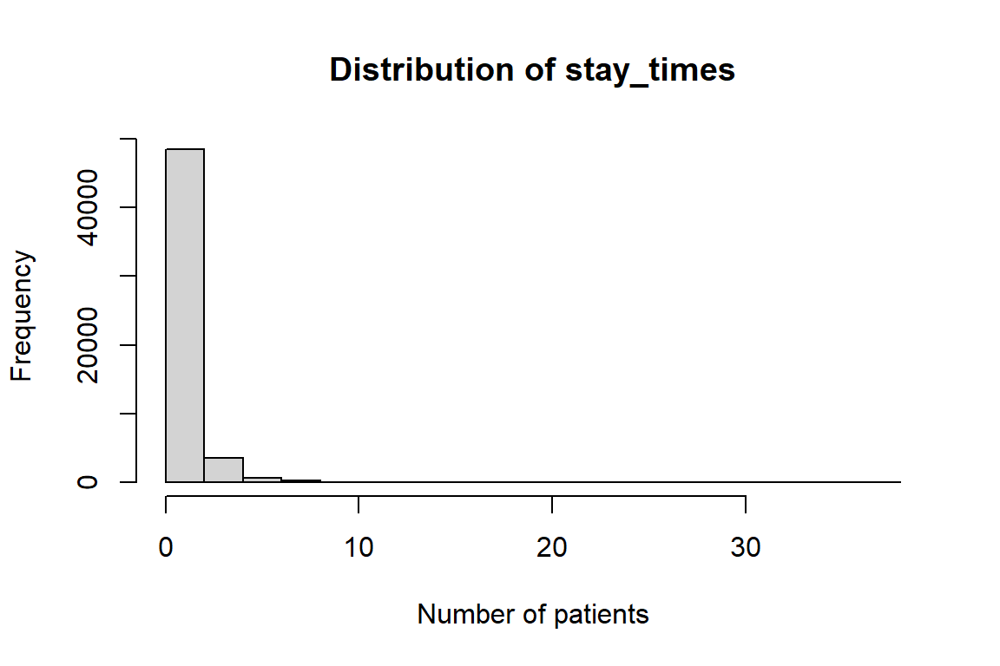
The distribution of number of times of icu_stay is summarized with a histogram here. From the graph, we can see that the majority of people only stayed in ICU for 1 or 2 times, but a few people stayed there for more than 5 times.
- For each
subject_id, let’s only keep the first ICU stay in the tibbleicustays_tble. (Hint:slice_minandslice_maxmay take long. Think alternative ways to achieve the same function.)
icu_uniq <- icustays_tble %>%
arrange(subject_id, intime) %>%
distinct(subject_id, .keep_all = TRUE)
icu_uniq# A tibble: 53,150 × 8
subject_id hadm_id stay_id first_careunit last_…¹ intime
<dbl> <dbl> <dbl> <chr> <chr> <dttm>
1 10000032 29079034 39553978 Medical Intensive C… Medica… 2180-07-23 14:00:00
2 10000980 26913865 39765666 Medical Intensive C… Medica… 2189-06-27 08:42:00
3 10001217 24597018 37067082 Surgical Intensive … Surgic… 2157-11-20 19:18:02
4 10001725 25563031 31205490 Medical/Surgical In… Medica… 2110-04-11 15:52:22
5 10001884 26184834 37510196 Medical Intensive C… Medica… 2131-01-11 04:20:05
6 10002013 23581541 39060235 Cardiac Vascular In… Cardia… 2160-05-18 10:00:53
7 10002155 23822395 33685454 Coronary Care Unit … Corona… 2129-08-04 12:45:00
8 10002223 22494570 39638202 Trauma SICU (TSICU) Trauma… 2158-01-15 08:01:49
9 10002348 22725460 32610785 Neuro Intermediate Neuro … 2112-11-30 23:24:00
10 10002428 28662225 33987268 Medical Intensive C… Medica… 2156-04-12 16:24:18
# … with 53,140 more rows, 2 more variables: outtime <dttm>, los <dbl>, and
# abbreviated variable name ¹last_careunit3 Q3. admission data
Information of the patients admitted into hospital is available in admissions.csv.gz. See https://mimic.mit.edu/docs/iv/modules/hosp/admissions/ for details of each field in this file. The first 10 lines are
zcat < ~/mimic/core/admissions.csv.gz | head -n "10"subject_id,hadm_id,admittime,dischtime,deathtime,admission_type,admission_location,discharge_location,insurance,language,marital_status,ethnicity,edregtime,edouttime,hospital_expire_flag
14679932,21038362,2139-09-26 14:16:00,2139-09-28 11:30:00,,ELECTIVE,,HOME,Other,ENGLISH,SINGLE,UNKNOWN,,,0
15585972,24941086,2123-10-07 23:56:00,2123-10-12 11:22:00,,ELECTIVE,,HOME,Other,ENGLISH,,WHITE,,,0
11989120,21965160,2147-01-14 09:00:00,2147-01-17 14:25:00,,ELECTIVE,,HOME,Other,ENGLISH,,UNKNOWN,,,0
17817079,24709883,2165-12-27 17:33:00,2165-12-31 21:18:00,,ELECTIVE,,HOME,Other,ENGLISH,,OTHER,,,0
15078341,23272159,2122-08-28 08:48:00,2122-08-30 12:32:00,,ELECTIVE,,HOME,Other,ENGLISH,,BLACK/AFRICAN AMERICAN,,,0
19124609,20517215,2169-03-14 12:44:00,2169-03-20 19:15:00,,ELECTIVE,,HOME,Other,ENGLISH,,UNKNOWN,,,0
17301855,29732723,2140-06-06 14:23:00,2140-06-08 14:25:00,,ELECTIVE,,HOME,Other,ENGLISH,,WHITE,,,0
17991012,24298836,2181-07-10 20:28:00,2181-07-12 15:49:00,,ELECTIVE,,HOME,Other,ENGLISH,,WHITE,,,0
16865435,23216961,2185-07-19 02:12:00,2185-07-21 11:50:00,,ELECTIVE,,HOME,Other,ENGLISH,,WHITE,,,0- Import
admissions.csv.gzas a tibbleadmissions_tble.
admissions_tble <- read_csv(str_c(mimic_path, "/core/admissions.csv.gz"))- Let’s only keep the admissions that have a match in
icustays_tbleaccording tosubject_idandhadmi_id.
nrow(admissions_tble)[1] 523740icu_admission <- admissions_tble %>%
arrange(subject_id, hadm_id) %>%
semi_join(icu_uniq, by = c('subject_id', 'hadm_id')) %>%
print(width = Inf)# A tibble: 53,150 × 15
subject_id hadm_id admittime dischtime
<dbl> <dbl> <dttm> <dttm>
1 10000032 29079034 2180-07-23 12:35:00 2180-07-25 17:55:00
2 10000980 26913865 2189-06-27 07:38:00 2189-07-03 03:00:00
3 10001217 24597018 2157-11-18 22:56:00 2157-11-25 18:00:00
4 10001725 25563031 2110-04-11 15:08:00 2110-04-14 15:00:00
5 10001884 26184834 2131-01-07 20:39:00 2131-01-20 05:15:00
6 10002013 23581541 2160-05-18 07:45:00 2160-05-23 13:30:00
7 10002155 23822395 2129-08-04 12:44:00 2129-08-18 16:53:00
8 10002223 22494570 2158-01-15 08:00:00 2158-01-20 19:29:00
9 10002348 22725460 2112-11-30 22:22:00 2112-12-10 17:56:00
10 10002428 28662225 2156-04-12 14:16:00 2156-04-29 16:26:00
deathtime admission_type admission_location
<dttm> <chr> <chr>
1 NA EW EMER. EMERGENCY ROOM
2 NA EW EMER. EMERGENCY ROOM
3 NA EW EMER. EMERGENCY ROOM
4 NA EW EMER. PACU
5 2131-01-20 05:15:00 OBSERVATION ADMIT EMERGENCY ROOM
6 NA SURGICAL SAME DAY ADMISSION PHYSICIAN REFERRAL
7 NA EW EMER. PROCEDURE SITE
8 NA EW EMER. EMERGENCY ROOM
9 NA OBSERVATION ADMIT TRANSFER FROM HOSPITAL
10 NA EW EMER. EMERGENCY ROOM
discharge_location insurance language marital_status
<chr> <chr> <chr> <chr>
1 HOME Medicaid ENGLISH WIDOWED
2 HOME HEALTH CARE Medicare ENGLISH MARRIED
3 HOME HEALTH CARE Other ? MARRIED
4 HOME Other ENGLISH MARRIED
5 DIED Medicare ENGLISH MARRIED
6 HOME HEALTH CARE Medicare ENGLISH SINGLE
7 CHRONIC/LONG TERM ACUTE CARE Other ENGLISH MARRIED
8 HOME Other ENGLISH <NA>
9 HOME HEALTH CARE Medicare ENGLISH SINGLE
10 SKILLED NURSING FACILITY Medicare ENGLISH WIDOWED
ethnicity edregtime edouttime
<chr> <dttm> <dttm>
1 WHITE 2180-07-23 05:54:00 2180-07-23 14:00:00
2 BLACK/AFRICAN AMERICAN 2189-06-27 06:25:00 2189-06-27 08:42:00
3 WHITE 2157-11-18 17:38:00 2157-11-19 01:24:00
4 WHITE NA NA
5 BLACK/AFRICAN AMERICAN 2131-01-07 13:36:00 2131-01-07 22:13:00
6 OTHER NA NA
7 WHITE 2129-08-04 11:00:00 2129-08-04 12:35:00
8 UNABLE TO OBTAIN 2158-01-15 06:49:00 2158-01-15 07:36:00
9 WHITE 2112-11-30 15:08:00 2112-11-30 23:24:00
10 WHITE 2156-04-12 09:56:00 2156-04-12 17:11:00
hospital_expire_flag
<dbl>
1 0
2 0
3 0
4 0
5 1
6 0
7 0
8 0
9 0
10 0
# … with 53,140 more rowsNow the new dataset icu_admission has the same number of rows as the icu_uniq created above.
Summarize the following variables by graphics.
- admission year
#admission year
ggplot(data = icu_admission) +
geom_bar(mapping = aes(x = year(icu_admission$admittime))) +
labs(title = 'Distribution of admission year') +
labs(x = 'Admission Year')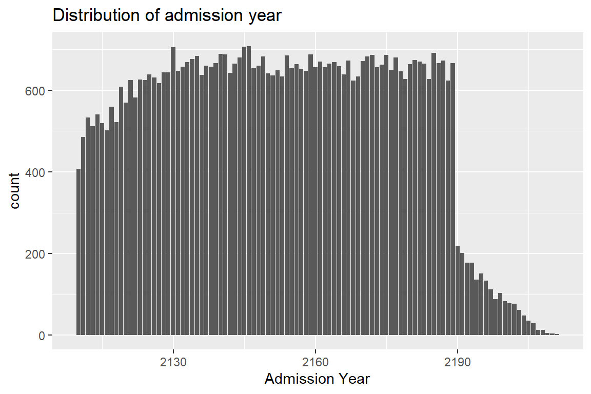
- admission month #admission month
ggplot(data = icu_admission) +
geom_bar(mapping = aes(x = month(icu_admission$admittime))) +
labs(title = 'Distribution of admission month') +
labs(x = 'Admission Month')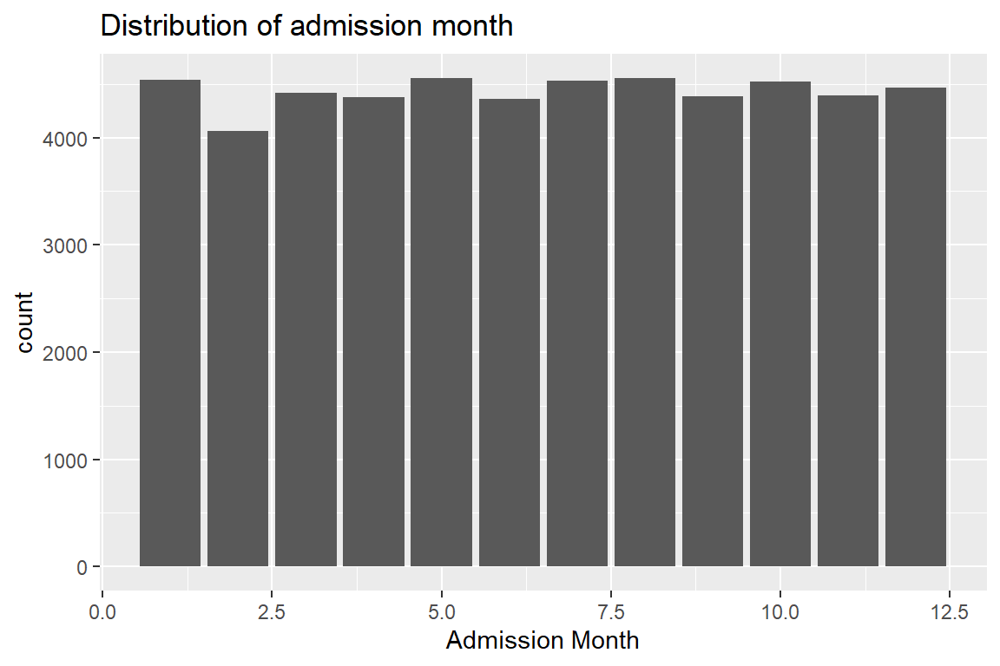
- admission month day #admission month day
ggplot(data = icu_admission) +
geom_bar(mapping = aes(x = mday(icu_admission$admittime))) +
labs(title = 'Distribution of admission day of month') +
labs(x = 'Admission Month Day')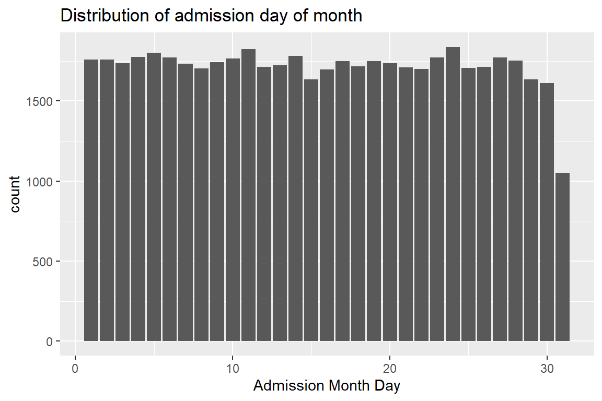
- admission week day #admission week day
ggplot(data = icu_admission) +
geom_bar(mapping = aes(x = wday(icu_admission$admittime))) +
labs(title = 'Distribution of admission day of week') +
labs(x = 'Admission Week Day')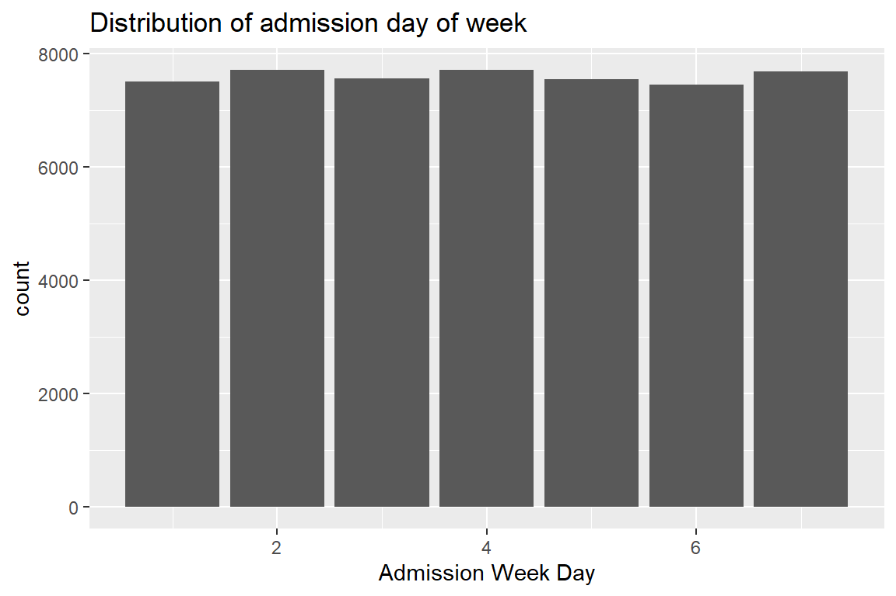
- admission hour (anything unusual?) The admissions at 0 and 7 o’clocks are abnormally high. The reason why 7 o’clock is crowded is probably because it is when people normally wake up and got out, the 0 o’clock is probably because sometimes the records does not have exact hour, so many of them are put on 0 o’clock.
#admission hour in a day
ggplot(data = icu_admission) +
geom_bar(mapping = aes(x = hour(icu_admission$admittime))) +
labs(title = 'Distribution of admission hour') +
labs(x = 'Admission Hour')
- admission minute (anything unusual?) The bar plot shows that the admissions at 0, 15, 30 and 45 are all significantly higher than other times. This is possibly due to the same rounding issues as the hours of the day, recorders tend to round unexact times to these values.
#admission minute
ggplot(data = icu_admission) +
geom_bar(mapping = aes(x = minute(icu_admission$admittime))) +
labs(title = 'Distribution of admission hour') +
labs(x = 'Admission Hour')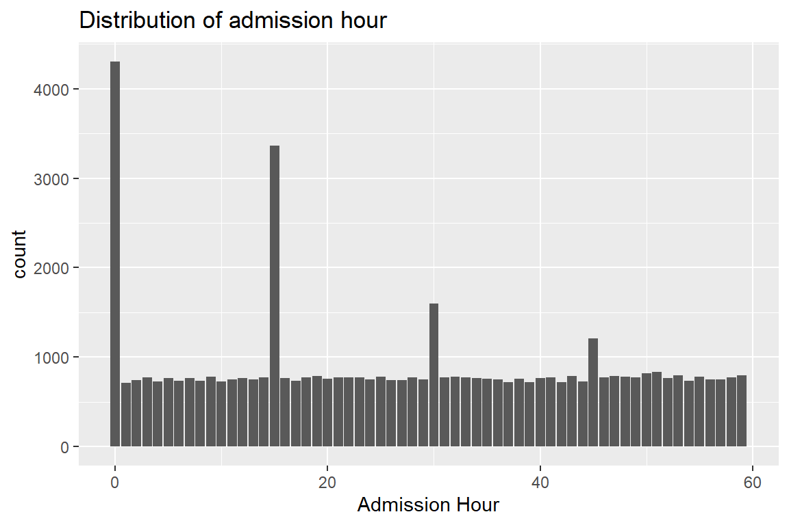
- length of hospital stay (anything unusual?) There are some extreme values that have stays hours longer than 100 hours. But majority of patients only stay for less than 10 hours.
stay_length <- as.numeric(icu_admission$dischtime - icu_admission$admittime)/3600
#Since there are very few hospital stays that are longer than 40 hours, I limit the length of x-axis to 40 hours to make the graph looks better.
hist(stay_length, breaks = 100, xlim = c(0, 40),
main = "Distribution of stay length",
xlab = "Hours of stay")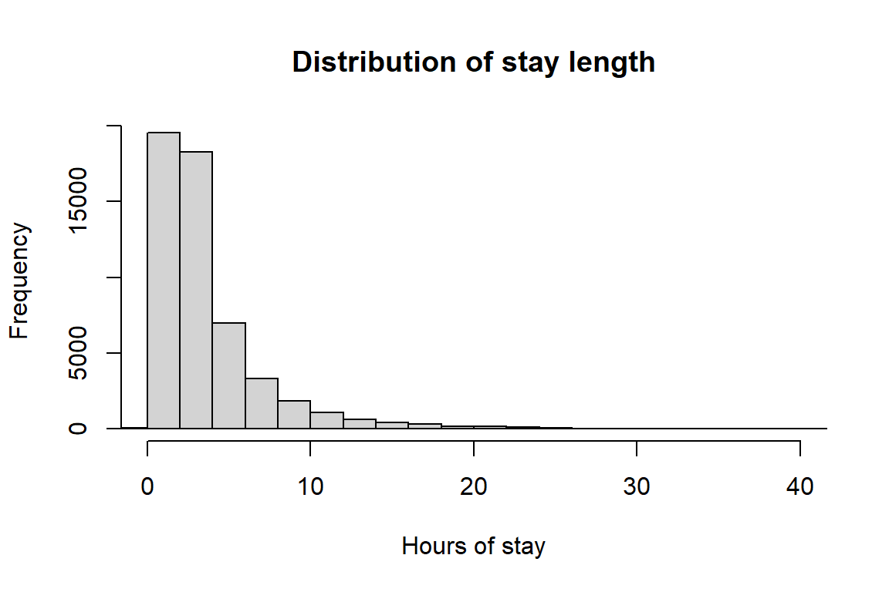
#This is the complete graph:
hist(stay_length, breaks = 100,
main = "Distribution of stay length (complete x-axis)",
xlab = "Hours of stay")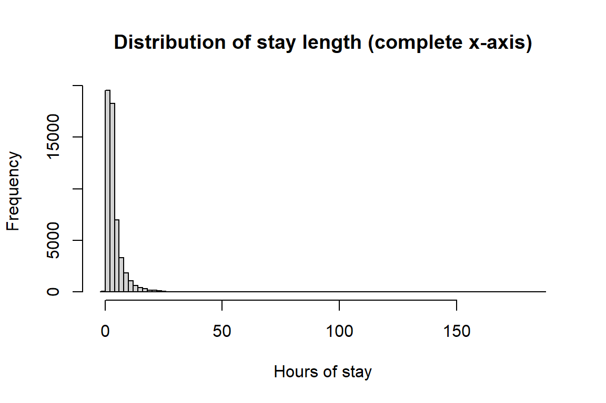
4 Q4. patients data
Patient information is available in patients.csv.gz. See https://mimic.mit.edu/docs/iv/modules/hosp/patients/ for details of each field in this file. The first 10 lines are
zcat < ~/mimic/core/patients.csv.gz | headsubject_id,gender,anchor_age,anchor_year,anchor_year_group,dod
10000048,F,23,2126,2008 - 2010,
10002723,F,0,2128,2017 - 2019,
10003939,M,0,2184,2008 - 2010,
10004222,M,0,2161,2014 - 2016,
10005325,F,0,2154,2011 - 2013,
10007338,F,0,2153,2017 - 2019,
10008101,M,0,2142,2008 - 2010,
10009872,F,0,2168,2014 - 2016,
10011333,F,0,2132,2014 - 2016,- Import
patients.csv.gz(https://mimic.mit.edu/docs/iv/modules/hosp/patients/) as a tibblepatients_tbleand only keep the patients who have a match inicustays_tble(according tosubject_id).
patients_tble <- read_csv(str_c(mimic_path, "/core/patients.csv.gz"))
icu_patients <- patients_tble %>%
arrange(subject_id) %>%
semi_join(icu_uniq, by=c('subject_id'))
icu_patients# A tibble: 53,150 × 6
subject_id gender anchor_age anchor_year anchor_year_group dod
<dbl> <chr> <dbl> <dbl> <chr> <date>
1 10000032 F 52 2180 2014 - 2016 NA
2 10000980 F 73 2186 2008 - 2010 NA
3 10001217 F 55 2157 2011 - 2013 NA
4 10001725 F 46 2110 2011 - 2013 NA
5 10001884 F 68 2122 2008 - 2010 2131-01-20
6 10002013 F 53 2156 2008 - 2010 NA
7 10002155 F 80 2128 2008 - 2010 2131-03-10
8 10002223 M 21 2158 2008 - 2010 NA
9 10002348 F 77 2112 2017 - 2019 NA
10 10002428 F 80 2155 2011 - 2013 NA
# … with 53,140 more rows- Summarize variables
genderandanchor_age, and explain any patterns you see.
table(icu_patients$gender)
F M
23353 29797 summary(icu_patients$anchor_age) Min. 1st Qu. Median Mean 3rd Qu. Max.
18.00 53.00 65.00 63.51 77.00 91.00 There is limited information in the above results, except that we can see there are more male patients than female patients. And the anchor age has a mean around 63, and a max about 91.
#Use histograms to visualize the two variables
ggplot(data = icu_patients) +
geom_histogram(mapping = aes(x = anchor_age, fill = gender), bins = 80) +
labs(title = "") +
labs(x = "Anchor age (years)", fill = "Gender")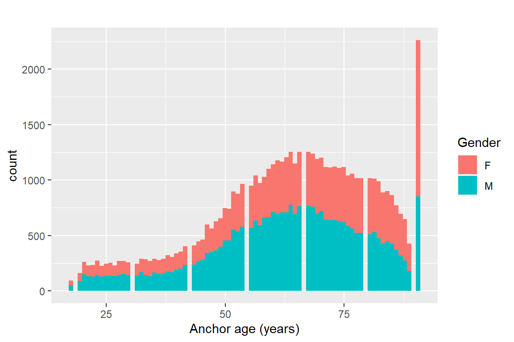
icu_patients %>%
filter(anchor_age == 91) %>%
nrow()[1] 2261The table and summary results showed that there are much more male patients than female patients. The mean age of all patients is 63.51, and the distribution of age is very left-skewed. On the histogram, we can see that the distribution of both females and males are both left-skewed, and the number of male patients are indeed more than female patients. In addition, there is a very wired column on the right side, I checked it with filter() and it shows it’s because there are many patients with age 91 and no patient is beyond this age. It might be caused by the record of hospital automatically classify all patients older than 91 as 91 years old.
5 Q5. Lab results
labevents.csv.gz (https://mimic.mit.edu/docs/iv/modules/hosp/labevents/) contains all laboratory measurements for patients. The first 10 lines are
zcat < ~/mimic/hosp/labevents.csv.gz | headlabevent_id,subject_id,hadm_id,specimen_id,itemid,charttime,storetime,value,valuenum,valueuom,ref_range_lower,ref_range_upper,flag,priority,comments
670,10000048,,6448755,51484,2126-11-22 19:20:00,2126-11-22 20:07:00,150,150,mg/dL,,,,STAT,
673,10000048,,6448755,51491,2126-11-22 19:20:00,2126-11-22 20:07:00,6.5,6.5,units,5,8,,STAT,
675,10000048,,6448755,51498,2126-11-22 19:20:00,2126-11-22 20:07:00,1.029,1.029, ,1.001,1.035,,STAT,
683,10000048,,82729055,50861,2126-11-22 20:45:00,2126-11-23 00:55:00,39,39,IU/L,0,40,,STAT,
684,10000048,,82729055,50862,2126-11-22 20:45:00,2126-11-23 00:55:00,4.7,4.7,g/dL,3.4,4.8,,STAT,
685,10000048,,82729055,50863,2126-11-22 20:45:00,2126-11-23 00:55:00,45,45,IU/L,39,117,,STAT,
686,10000048,,82729055,50868,2126-11-22 20:45:00,2126-11-22 21:32:00,13,13,mEq/L,8,20,,STAT,
687,10000048,,82729055,50878,2126-11-22 20:45:00,2126-11-23 00:55:00,28,28,IU/L,0,40,,STAT,
688,10000048,,82729055,50882,2126-11-22 20:45:00,2126-11-22 21:32:00,26,26,mEq/L,22,32,,STAT,d_labitems.csv.gz is the dictionary of lab measurements.
zcat < ~/mimic/hosp/d_labitems.csv.gz | headitemid,label,fluid,category,loinc_code
51905, ,Other Body Fluid,Chemistry,
51532,11-Deoxycorticosterone,Blood,Chemistry,
51957,17-Hydroxycorticosteroids,Urine,Chemistry,
51958,"17-Ketosteroids, Urine",Urine,Chemistry,
52068,24 Hr,Blood,Hematology,
51066,24 hr Calcium,Urine,Chemistry,
51067,24 hr Creatinine,Urine,Chemistry,
51068,24 hr Protein,Urine,Chemistry,
50853,25-OH Vitamin D,Blood,Chemistry,- Find how many rows are in
labevents.csv.gz.
zcat < ~/mimic/hosp/labevents.csv.gz | awk 'END {print NR}'122103668In the complete labevents file, there are 122103668 lines in total.
lab_dic <- read_csv(str_c(mimic_path, "/hosp/d_labitems.csv.gz"))
labevents <- read_csv(str_c(mimic_path, "/hosp/labevents_filtered_itemid.csv.gz"))#number of rows in the filtered csv file:
nrow(labevents) [1] 30198826There are 30198826 rows in this filtered dataset.
We are interested in the lab measurements of creatinine (50912), potassium (50971), sodium (50983), chloride (50902), bicarbonate (50882), hematocrit (51221), white blood cell count (51301), and glucose (50931). Retrieve a subset of
labevents.csv.gzonly containing these items for the patients inicustays_tbleas a tibblelabevents_tble.Hint:
labevents.csv.gzis a data file too big to be read in by theread_csvfunction in its default setting. Utilize thecol_selectoption in theread_csvfunction to reduce the memory burden. It took my computer 5-10 minutes to ingest this file. If your computer really has trouble importinglabevents.csv.gz, you can import from the reduced data filelabevents_filtered_itemid.csv.gz.
lab_icu <- labevents %>%
arrange(subject_id, itemid) %>%
filter(itemid %in%
c(50912, 50971, 50983, 50902, 50882, 51221, 51301, 50931)) %>%
filter(subject_id %in% icustays_tble$subject_id) %>%
left_join(select(lab_dic, c(itemid, label)), by = 'itemid') %>%
print(width = Inf)# A tibble: 13,926,853 × 5
subject_id itemid charttime valuenum label
<dbl> <dbl> <dttm> <dbl> <chr>
1 10000032 50882 2180-03-23 11:51:00 27 Bicarbonate
2 10000032 50882 2180-05-06 22:25:00 27 Bicarbonate
3 10000032 50882 2180-05-07 05:05:00 28 Bicarbonate
4 10000032 50882 2180-06-03 12:00:00 28 Bicarbonate
5 10000032 50882 2180-06-03 12:00:00 29 Bicarbonate
6 10000032 50882 2180-06-22 11:15:00 26 Bicarbonate
7 10000032 50882 2180-06-26 16:10:00 26 Bicarbonate
8 10000032 50882 2180-06-27 05:10:00 25 Bicarbonate
9 10000032 50882 2180-07-23 06:39:00 25 Bicarbonate
10 10000032 50882 2180-07-23 21:45:00 21 Bicarbonate
# … with 13,926,843 more rowsicu_lab contains 13,926,853 rows, it only has the lab items required by us, and the rows all belong to the icu patients.
- Further restrict
labevents_tbleto the first lab measurement during the ICU stay.
icu_arrange <- icustays_tble %>%
arrange(subject_id) %>%
select(subject_id, intime, outtime, stay_id)
#icu_arrange should contain all the rows in icustays, but with only three relevant columns and sorted by subject ID.
lab_icuonly1 <- lab_icu %>%
left_join(icu_arrange, by = "subject_id") %>%
filter(charttime >= intime & charttime <= outtime) %>%
group_by(subject_id, itemid) %>%
arrange(charttime, .by_group = T) %>%
slice_head(n = 1) %>%
ungroup()
lab_icuonly2 <- lab_icuonly1 %>%
select(-intime, -outtime, -charttime, -itemid) %>%
pivot_wider(names_from = label,
values_from = valuenum) %>%
print(width = Inf)# A tibble: 52,038 × 10
subject_id stay_id Bicarbonate Chloride Creatinine Glucose Potassium Sodium
<dbl> <dbl> <dbl> <dbl> <dbl> <dbl> <dbl> <dbl>
1 10000032 39553978 21 102 0.5 115 4.7 132
2 10001217 37067082 23 104 0.4 113 3.6 138
3 10001725 31205490 24 106 0.8 146 3.9 140
4 10001884 37510196 33 96 1.1 148 4 136
5 10002013 39060235 23 109 1.1 98 4 140
6 10002155 33685454 25 106 0.9 95 4.5 139
7 10002223 39638202 26 102 0.8 88 3.9 138
8 10002348 32610785 23 107 0.8 127 4.8 142
9 10002428 33987268 20 98 0.8 99 3.9 129
10 10002430 38392119 22 105 2.2 128 3.8 144
Hematocrit `White Blood Cells`
<dbl> <dbl>
1 NA NA
2 33.6 19
3 39.1 17
4 36 18.4
5 28.6 18.2
6 37.9 5.5
7 32.5 10.1
8 39.3 4.3
9 28.7 22.4
10 36.6 10.3
# … with 52,028 more rows- Summarize the lab measurements by appropriate numerics and graphics.
lapply(lab_icuonly2[, -c(1, 2)], summary) #apply summary() to each columns$Bicarbonate
Min. 1st Qu. Median Mean 3rd Qu. Max. NA's
2.00 21.00 23.00 22.97 25.00 49.00 372
$Chloride
Min. 1st Qu. Median Mean 3rd Qu. Max. NA's
58.0 101.0 105.0 104.5 108.0 153.0 337
$Creatinine
Min. 1st Qu. Median Mean 3rd Qu. Max. NA's
0.000 0.700 0.900 1.312 1.300 36.900 351
$Glucose
Min. 1st Qu. Median Mean 3rd Qu. Max. NA's
7.0 103.0 124.0 141.4 156.0 2440.0 433
$Potassium
Min. 1st Qu. Median Mean 3rd Qu. Max. NA's
0.800 3.700 4.100 4.178 4.500 13.000 363
$Sodium
Min. 1st Qu. Median Mean 3rd Qu. Max. NA's
92.0 136.0 139.0 138.5 141.0 180.0 330
$Hematocrit
Min. 1st Qu. Median Mean 3rd Qu. Max. NA's
4.30 28.10 32.60 32.74 37.30 68.60 573
$`White Blood Cells`
Min. 1st Qu. Median Mean 3rd Qu. Max. NA's
0.00 7.60 10.50 12.07 14.50 572.50 668 Visualize each lab item by histograms
#use the unpivoted dataframe, since it is easier to facet.
lab_icuonly1%>%
#There are many abnormal values on some of the variables, possibly due to the recording errors, limit each variable to make the histograms better:
filter((label == 'Creatinine' & valuenum < 7.5) |
(label == 'White Blood Cells' & valuenum < 30 ) |
(label == 'Glucose' & valuenum < 1000) |
#The resut of the categories don't need to be filtered
(label == 'Bicarbonate') | (label == 'Chloride') |
(label == 'Hematocrit') | (label == 'Potassium') |
(label == 'Sodium')) %>%
ggplot(aes(x = valuenum)) +
geom_histogram(bins = 50) +
facet_wrap(~ label, scales = "free")Warning: Removed 287 rows containing non-finite values (`stat_bin()`).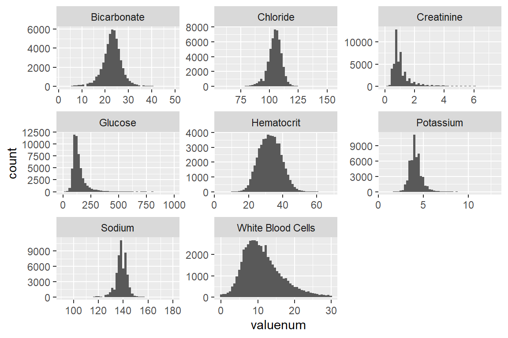
6 Q6. Vitals from charted events
chartevents.csv.gz (https://mimic.mit.edu/docs/iv/modules/icu/chartevents/) contains all the charted data available for a patient. During their ICU stay, the primary repository of a patient’s information is their electronic chart. The itemid variable indicates a single measurement type in the database. The value variable is the value measured for itemid. The first 10 lines of chartevents.csv.gz are
zcat < ~/mimic/icu/chartevents.csv.gz | headsubject_id,hadm_id,stay_id,charttime,storetime,itemid,value,valuenum,valueuom,warning
10003700,28623837,30600691,2165-04-24 05:10:00,2165-04-24 05:11:00,228236,0,0,,0
10003700,28623837,30600691,2165-04-24 05:12:00,2165-04-24 05:14:00,225067,0,0,,0
10003700,28623837,30600691,2165-04-24 05:12:00,2165-04-24 05:14:00,225070,1,1,,0
10003700,28623837,30600691,2165-04-24 05:12:00,2165-04-24 05:14:00,225076,1,1,,0
10003700,28623837,30600691,2165-04-24 05:12:00,2165-04-24 05:14:00,225078,1,1,,0
10003700,28623837,30600691,2165-04-24 05:12:00,2165-04-24 05:14:00,225086,1,1,,0
10003700,28623837,30600691,2165-04-24 05:12:00,2165-04-24 05:14:00,225091,1,1,,0
10003700,28623837,30600691,2165-04-24 05:12:00,2165-04-24 05:14:00,225103,1,1,,0
10003700,28623837,30600691,2165-04-24 05:12:00,2165-04-24 05:14:00,225106,1,1,,0d_items.csv.gz (https://mimic.mit.edu/docs/iv/modules/icu/d_items/) is the dictionary for the itemid in chartevents.csv.gz.
zcat < ~/mimic/icu/d_items.csv.gz | headitemid,label,abbreviation,linksto,category,unitname,param_type,lownormalvalue,highnormalvalue
220003,ICU Admission date,ICU Admission date,datetimeevents,ADT,,Date and time,,
220045,Heart Rate,HR,chartevents,Routine Vital Signs,bpm,Numeric,,
220046,Heart rate Alarm - High,HR Alarm - High,chartevents,Alarms,bpm,Numeric,,
220047,Heart Rate Alarm - Low,HR Alarm - Low,chartevents,Alarms,bpm,Numeric,,
220048,Heart Rhythm,Heart Rhythm,chartevents,Routine Vital Signs,,Text,,
220050,Arterial Blood Pressure systolic,ABPs,chartevents,Routine Vital Signs,mmHg,Numeric,90,140
220051,Arterial Blood Pressure diastolic,ABPd,chartevents,Routine Vital Signs,mmHg,Numeric,60,90
220052,Arterial Blood Pressure mean,ABPm,chartevents,Routine Vital Signs,mmHg,Numeric,,
220056,Arterial Blood Pressure Alarm - Low,ABP Alarm - Low,chartevents,Alarms,mmHg,Numeric,,We are interested in the vitals for ICU patients: heart rate (220045), mean non-invasive blood pressure (220181), systolic non-invasive blood pressure (220179), body temperature in Fahrenheit (223761), and respiratory rate (220210). Retrieve a subset of
chartevents.csv.gzonly containing these items for the patients inicustays_tbleas a tibblechartevents_tble.Hint:
chartevents.csv.gzis a data file too big to be read in by theread_csvfunction in its default setting. Utilize thecol_selectoption in theread_csvfunction to reduce the memory burden. It took my computer >15 minutes to ingest this file. If your computer really has trouble importingchartevents.csv.gz, you can import from the reduced data filechartevents_filtered_itemid.csv.gz.
chartevents <- read_csv(str_c(mimic_path, "/icu/chartevents_filtered_itemid.csv.gz"))
#import dictionary
chart_dic <- read_csv(str_c(mimic_path, "/icu/d_items.csv.gz"))chartevents_tble <- chartevents %>%
filter(itemid %in% c(220045, 220181, 220179, 223761, 220210)) %>%
filter(subject_id %in% icu_uniq$subject_id) %>%
left_join(select(chart_dic, c(itemid, label)), by = 'itemid') %>%
print(width = Inf)# A tibble: 23,679,058 × 7
subject_id hadm_id stay_id charttime itemid valuenum
<dbl> <dbl> <dbl> <dttm> <dbl> <dbl>
1 10003700 28623837 30600691 2165-04-24 05:28:00 220179 152
2 10003700 28623837 30600691 2165-04-24 05:28:00 220181 110
3 10003700 28623837 30600691 2165-04-24 05:30:00 220045 65
4 10003700 28623837 30600691 2165-04-24 05:30:00 220210 14
5 10003700 28623837 30600691 2165-04-24 05:38:00 223761 97.6
6 10003700 28623837 30600691 2165-04-24 06:00:00 220045 56
7 10003700 28623837 30600691 2165-04-24 06:00:00 220179 126
8 10003700 28623837 30600691 2165-04-24 06:00:00 220181 88
9 10003700 28623837 30600691 2165-04-24 06:00:00 220210 14
10 10003700 28623837 30600691 2165-04-24 06:09:00 220045 55
label
<chr>
1 Non Invasive Blood Pressure systolic
2 Non Invasive Blood Pressure mean
3 Heart Rate
4 Respiratory Rate
5 Temperature Fahrenheit
6 Heart Rate
7 Non Invasive Blood Pressure systolic
8 Non Invasive Blood Pressure mean
9 Respiratory Rate
10 Heart Rate
# … with 23,679,048 more rows- Further restrict
chartevents_tbleto the first vital measurement during the ICU stay.
#icu_arrange contains all the rows in icustays, but with only three relevant columns and sorted by subject ID.
chart_icuonly1 <- chartevents_tble %>%
left_join(icu_arrange, by = "subject_id") %>%
filter(charttime >= intime & charttime <= outtime) %>%
group_by(subject_id, itemid) %>%
arrange(charttime, .by_group = T) %>%
slice_head(n = 1) %>%
ungroup()
chart_icuonly2 <- chart_icuonly1 %>%
select(-hadm_id, -stay_id.x, -stay_id.y, -intime, -outtime, -charttime, -itemid) %>%
pivot_wider(names_from = label,
values_from = valuenum) %>%
print(width = Inf)# A tibble: 53,150 × 6
subject_id `Heart Rate` `Non Invasive Blood Pressure systolic`
<dbl> <dbl> <dbl>
1 10000032 91 84
2 10000980 77 150
3 10001217 86 151
4 10001725 55 73
5 10001884 38 180
6 10002013 80 104
7 10002155 68 126
8 10002223 100 123
9 10002348 72 129
10 10002428 124 87
`Non Invasive Blood Pressure mean` `Respiratory Rate`
<dbl> <dbl>
1 56 24
2 92 23
3 104 18
4 59 19
5 46 10
6 77 14
7 78 18
8 80 29
9 85 14
10 53 25
`Temperature Fahrenheit`
<dbl>
1 98.7
2 98
3 98.5
4 97.7
5 98.1
6 97.2
7 95.9
8 98.6
9 97.9
10 103.
# … with 53,140 more rows- Summarize these vital measurements by appropriate numerics and graphics.
lapply(chart_icuonly2[, -1], summary) #apply summary() to each columns$`Heart Rate`
Min. 1st Qu. Median Mean 3rd Qu. Max. NA's
0.00 74.00 85.00 87.47 99.00 941.00 1
$`Non Invasive Blood Pressure systolic`
Min. 1st Qu. Median Mean 3rd Qu. Max. NA's
0.0 106.0 122.0 123.8 139.0 12262.0 512
$`Non Invasive Blood Pressure mean`
Min. 1st Qu. Median Mean 3rd Qu. Max. NA's
0.00 70.00 81.00 87.39 93.00 140119.00 533
$`Respiratory Rate`
Min. 1st Qu. Median Mean 3rd Qu. Max. NA's
0.00 15.00 18.00 18.69 22.00 180.00 37
$`Temperature Fahrenheit`
Min. 1st Qu. Median Mean 3rd Qu. Max. NA's
0.00 97.60 98.10 98.03 98.70 106.00 821 Visualize each lab item by histograms
#use the unpivoted dataframe, since it is easier to facet.
#From the summary result above, we can see that there are some very extreme outliers, possibly caused by misrecording. So, I filtered the values of those that are beyond the normal range, to make the plots look better.
chart_icuonly1 %>%
filter((label == 'Non Invasive Blood Pressure mean' & valuenum < 250) |
(label == 'Heart Rate' & valuenum < 250 ) |
(label == 'Non Invasive Blood Pressure systolic' & valuenum < 250) |
(label == 'Respiratory Rate' & valuenum < 50) |
(label == 'Temperature Fahrenheit' & valuenum > 80)) %>%
ggplot(aes(x = valuenum)) +
geom_histogram(bins = 50) +
facet_wrap(~ label, scales = "free")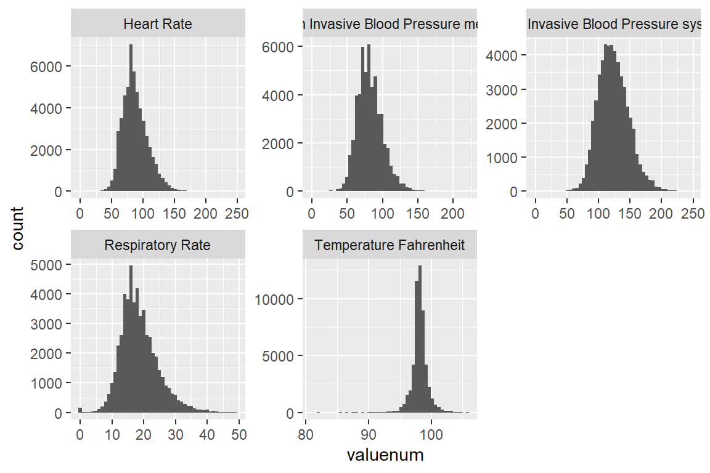
7 Q7. Putting things together
Let us create a tibble mimic_icu_cohort for all ICU stays, where rows are the first ICU stay of each unique adult (age at admission > 18) and columns contain at least following variables
- all variables in
icustays.csv.gz
- all variables in
admission.csv.gz
- all variables in
patients.csv.gz
- first lab measurements during ICU stay
- first vital measurements during ICU stay
- an indicator variable
thirty_day_mortwhether the patient died within 30 days of hospital admission (30 day mortality)
mimic_icu_unfilter <- icustays_tble %>%
group_by(subject_id) %>%
arrange(intime) %>%
slice(n = 1) %>%
ungroup() %>%
left_join(patients_tble, by = 'subject_id') %>%
left_join(select(admissions_tble, -hadm_id), by = 'subject_id') %>%
mutate(age_real = anchor_age + year(admittime) - anchor_year) %>%
filter(age_real > 18) %>%
left_join(lab_icuonly2, by = 'subject_id') %>%
left_join(chart_icuonly2, by = 'subject_id') %>%
mutate(thirty_day_mort = ifelse(is.na(deathtime), FALSE,
((deathtime - admittime) < ddays(30)))) %>%
print(width = Inf)# A tibble: 184,978 × 42
subject_id hadm_id stay_id.x first_careunit
<dbl> <dbl> <dbl> <chr>
1 10000032 29079034 39553978 Medical Intensive Care Unit (MICU)
2 10000032 29079034 39553978 Medical Intensive Care Unit (MICU)
3 10000032 29079034 39553978 Medical Intensive Care Unit (MICU)
4 10000032 29079034 39553978 Medical Intensive Care Unit (MICU)
5 10000980 26913865 39765666 Medical Intensive Care Unit (MICU)
6 10000980 26913865 39765666 Medical Intensive Care Unit (MICU)
7 10000980 26913865 39765666 Medical Intensive Care Unit (MICU)
8 10000980 26913865 39765666 Medical Intensive Care Unit (MICU)
9 10000980 26913865 39765666 Medical Intensive Care Unit (MICU)
10 10000980 26913865 39765666 Medical Intensive Care Unit (MICU)
last_careunit intime outtime
<chr> <dttm> <dttm>
1 Medical Intensive Care Unit (MICU) 2180-07-23 14:00:00 2180-07-23 23:50:47
2 Medical Intensive Care Unit (MICU) 2180-07-23 14:00:00 2180-07-23 23:50:47
3 Medical Intensive Care Unit (MICU) 2180-07-23 14:00:00 2180-07-23 23:50:47
4 Medical Intensive Care Unit (MICU) 2180-07-23 14:00:00 2180-07-23 23:50:47
5 Medical Intensive Care Unit (MICU) 2189-06-27 08:42:00 2189-06-27 20:38:27
6 Medical Intensive Care Unit (MICU) 2189-06-27 08:42:00 2189-06-27 20:38:27
7 Medical Intensive Care Unit (MICU) 2189-06-27 08:42:00 2189-06-27 20:38:27
8 Medical Intensive Care Unit (MICU) 2189-06-27 08:42:00 2189-06-27 20:38:27
9 Medical Intensive Care Unit (MICU) 2189-06-27 08:42:00 2189-06-27 20:38:27
10 Medical Intensive Care Unit (MICU) 2189-06-27 08:42:00 2189-06-27 20:38:27
los gender anchor_age anchor_year anchor_year_group dod
<dbl> <chr> <dbl> <dbl> <chr> <date>
1 0.410 F 52 2180 2014 - 2016 NA
2 0.410 F 52 2180 2014 - 2016 NA
3 0.410 F 52 2180 2014 - 2016 NA
4 0.410 F 52 2180 2014 - 2016 NA
5 0.498 F 73 2186 2008 - 2010 NA
6 0.498 F 73 2186 2008 - 2010 NA
7 0.498 F 73 2186 2008 - 2010 NA
8 0.498 F 73 2186 2008 - 2010 NA
9 0.498 F 73 2186 2008 - 2010 NA
10 0.498 F 73 2186 2008 - 2010 NA
admittime dischtime deathtime admission_type
<dttm> <dttm> <dttm> <chr>
1 2180-07-23 12:35:00 2180-07-25 17:55:00 NA EW EMER.
2 2180-05-06 22:23:00 2180-05-07 17:15:00 NA URGENT
3 2180-06-26 18:27:00 2180-06-27 18:49:00 NA EW EMER.
4 2180-08-05 23:44:00 2180-08-07 17:50:00 NA EW EMER.
5 2193-08-15 01:01:00 2193-08-17 15:07:00 NA OBSERVATION ADMIT
6 2191-07-16 14:21:00 2191-07-19 13:03:00 NA EW EMER.
7 2191-05-23 15:33:00 2191-05-24 17:14:00 NA EW EMER.
8 2191-04-03 18:48:00 2191-04-11 16:21:00 NA EW EMER.
9 2189-06-27 07:38:00 2189-07-03 03:00:00 NA EW EMER.
10 2188-01-03 17:41:00 2188-01-05 17:30:00 NA EW EMER.
admission_location discharge_location insurance language
<chr> <chr> <chr> <chr>
1 EMERGENCY ROOM HOME Medicaid ENGLISH
2 TRANSFER FROM HOSPITAL HOME Other ENGLISH
3 EMERGENCY ROOM HOME Medicaid ENGLISH
4 EMERGENCY ROOM HOSPICE Medicaid ENGLISH
5 WALK-IN/SELF REFERRAL HOME HEALTH CARE Other ENGLISH
6 EMERGENCY ROOM HOME HEALTH CARE Medicare ENGLISH
7 EMERGENCY ROOM HOME HEALTH CARE Medicare ENGLISH
8 EMERGENCY ROOM SKILLED NURSING FACILITY Medicare ENGLISH
9 EMERGENCY ROOM HOME HEALTH CARE Medicare ENGLISH
10 EMERGENCY ROOM HOME HEALTH CARE Medicare ENGLISH
marital_status ethnicity edregtime edouttime
<chr> <chr> <dttm> <dttm>
1 WIDOWED WHITE 2180-07-23 05:54:00 2180-07-23 14:00:00
2 WIDOWED WHITE 2180-05-06 19:17:00 2180-05-06 23:30:00
3 WIDOWED WHITE 2180-06-26 15:54:00 2180-06-26 21:31:00
4 WIDOWED WHITE 2180-08-05 20:58:00 2180-08-06 01:44:00
5 MARRIED BLACK/AFRICAN AMERICAN 2193-08-14 21:25:00 2193-08-15 02:22:00
6 MARRIED BLACK/AFRICAN AMERICAN 2191-07-16 10:52:00 2191-07-16 16:22:00
7 MARRIED BLACK/AFRICAN AMERICAN 2191-05-22 16:06:00 2191-05-23 17:56:00
8 MARRIED BLACK/AFRICAN AMERICAN 2191-04-03 12:36:00 2191-04-03 20:29:00
9 MARRIED BLACK/AFRICAN AMERICAN 2189-06-27 06:25:00 2189-06-27 08:42:00
10 MARRIED BLACK/AFRICAN AMERICAN 2188-01-03 12:23:00 2188-01-03 18:42:00
hospital_expire_flag age_real stay_id.y Bicarbonate Chloride Creatinine
<dbl> <dbl> <dbl> <dbl> <dbl> <dbl>
1 0 52 39553978 21 102 0.5
2 0 52 39553978 21 102 0.5
3 0 52 39553978 21 102 0.5
4 0 52 39553978 21 102 0.5
5 0 80 NA NA NA NA
6 0 78 NA NA NA NA
7 0 78 NA NA NA NA
8 0 78 NA NA NA NA
9 0 76 NA NA NA NA
10 0 75 NA NA NA NA
Glucose Potassium Sodium Hematocrit `White Blood Cells` `Heart Rate`
<dbl> <dbl> <dbl> <dbl> <dbl> <dbl>
1 115 4.7 132 NA NA 91
2 115 4.7 132 NA NA 91
3 115 4.7 132 NA NA 91
4 115 4.7 132 NA NA 91
5 NA NA NA NA NA 77
6 NA NA NA NA NA 77
7 NA NA NA NA NA 77
8 NA NA NA NA NA 77
9 NA NA NA NA NA 77
10 NA NA NA NA NA 77
`Non Invasive Blood Pressure systolic` `Non Invasive Blood Pressure mean`
<dbl> <dbl>
1 84 56
2 84 56
3 84 56
4 84 56
5 150 92
6 150 92
7 150 92
8 150 92
9 150 92
10 150 92
`Respiratory Rate` `Temperature Fahrenheit` thirty_day_mort
<dbl> <dbl> <lgl>
1 24 98.7 FALSE
2 24 98.7 FALSE
3 24 98.7 FALSE
4 24 98.7 FALSE
5 23 98 FALSE
6 23 98 FALSE
7 23 98 FALSE
8 23 98 FALSE
9 23 98 FALSE
10 23 98 FALSE
# … with 184,968 more rowsThere are multiple roles for a single subject_id, due to multiple admission, I only want to keep the admission data for the icu_stay.
mimic_icu_cohort <- mimic_icu_unfilter %>%
#Used filter to keep the rows that the intime of icu is between the admittime and dischattime of the admission.
filter(intime > admittime & intime < dischtime) %>%
#if there are multiple icu stays during one admission, only keep the first one
group_by(subject_id, admittime) %>%
slice(n = 1) %>%
ungroup() %>%
print(width = Inf)# A tibble: 52,613 × 42
subject_id hadm_id stay_id.x
<dbl> <dbl> <dbl>
1 10000032 29079034 39553978
2 10000980 26913865 39765666
3 10001217 24597018 37067082
4 10001725 25563031 31205490
5 10001884 26184834 37510196
6 10002013 23581541 39060235
7 10002155 23822395 33685454
8 10002223 22494570 39638202
9 10002348 22725460 32610785
10 10002428 28662225 33987268
first_careunit
<chr>
1 Medical Intensive Care Unit (MICU)
2 Medical Intensive Care Unit (MICU)
3 Surgical Intensive Care Unit (SICU)
4 Medical/Surgical Intensive Care Unit (MICU/SICU)
5 Medical Intensive Care Unit (MICU)
6 Cardiac Vascular Intensive Care Unit (CVICU)
7 Coronary Care Unit (CCU)
8 Trauma SICU (TSICU)
9 Neuro Intermediate
10 Medical Intensive Care Unit (MICU)
last_careunit intime
<chr> <dttm>
1 Medical Intensive Care Unit (MICU) 2180-07-23 14:00:00
2 Medical Intensive Care Unit (MICU) 2189-06-27 08:42:00
3 Surgical Intensive Care Unit (SICU) 2157-11-20 19:18:02
4 Medical/Surgical Intensive Care Unit (MICU/SICU) 2110-04-11 15:52:22
5 Medical Intensive Care Unit (MICU) 2131-01-11 04:20:05
6 Cardiac Vascular Intensive Care Unit (CVICU) 2160-05-18 10:00:53
7 Coronary Care Unit (CCU) 2129-08-04 12:45:00
8 Trauma SICU (TSICU) 2158-01-15 08:01:49
9 Neuro Intermediate 2112-11-30 23:24:00
10 Medical Intensive Care Unit (MICU) 2156-04-12 16:24:18
outtime los gender anchor_age anchor_year anchor_year_group
<dttm> <dbl> <chr> <dbl> <dbl> <chr>
1 2180-07-23 23:50:47 0.410 F 52 2180 2014 - 2016
2 2189-06-27 20:38:27 0.498 F 73 2186 2008 - 2010
3 2157-11-21 22:08:00 1.12 F 55 2157 2011 - 2013
4 2110-04-12 23:59:56 1.34 F 46 2110 2011 - 2013
5 2131-01-20 08:27:30 9.17 F 68 2122 2008 - 2010
6 2160-05-19 17:33:33 1.31 F 53 2156 2008 - 2010
7 2129-08-10 17:02:38 6.18 F 80 2128 2008 - 2010
8 2158-01-16 15:19:24 1.30 M 21 2158 2008 - 2010
9 2112-12-10 18:25:13 9.79 F 77 2112 2017 - 2019
10 2156-04-17 15:57:08 4.98 F 80 2155 2011 - 2013
dod admittime dischtime deathtime
<date> <dttm> <dttm> <dttm>
1 NA 2180-07-23 12:35:00 2180-07-25 17:55:00 NA
2 NA 2189-06-27 07:38:00 2189-07-03 03:00:00 NA
3 NA 2157-11-18 22:56:00 2157-11-25 18:00:00 NA
4 NA 2110-04-11 15:08:00 2110-04-14 15:00:00 NA
5 2131-01-20 2131-01-07 20:39:00 2131-01-20 05:15:00 2131-01-20 05:15:00
6 NA 2160-05-18 07:45:00 2160-05-23 13:30:00 NA
7 2131-03-10 2129-08-04 12:44:00 2129-08-18 16:53:00 NA
8 NA 2158-01-15 08:00:00 2158-01-20 19:29:00 NA
9 NA 2112-11-30 22:22:00 2112-12-10 17:56:00 NA
10 NA 2156-04-12 14:16:00 2156-04-29 16:26:00 NA
admission_type admission_location
<chr> <chr>
1 EW EMER. EMERGENCY ROOM
2 EW EMER. EMERGENCY ROOM
3 EW EMER. EMERGENCY ROOM
4 EW EMER. PACU
5 OBSERVATION ADMIT EMERGENCY ROOM
6 SURGICAL SAME DAY ADMISSION PHYSICIAN REFERRAL
7 EW EMER. PROCEDURE SITE
8 EW EMER. EMERGENCY ROOM
9 OBSERVATION ADMIT TRANSFER FROM HOSPITAL
10 EW EMER. EMERGENCY ROOM
discharge_location insurance language marital_status
<chr> <chr> <chr> <chr>
1 HOME Medicaid ENGLISH WIDOWED
2 HOME HEALTH CARE Medicare ENGLISH MARRIED
3 HOME HEALTH CARE Other ? MARRIED
4 HOME Other ENGLISH MARRIED
5 DIED Medicare ENGLISH MARRIED
6 HOME HEALTH CARE Medicare ENGLISH SINGLE
7 CHRONIC/LONG TERM ACUTE CARE Other ENGLISH MARRIED
8 HOME Other ENGLISH <NA>
9 HOME HEALTH CARE Medicare ENGLISH SINGLE
10 SKILLED NURSING FACILITY Medicare ENGLISH WIDOWED
ethnicity edregtime edouttime
<chr> <dttm> <dttm>
1 WHITE 2180-07-23 05:54:00 2180-07-23 14:00:00
2 BLACK/AFRICAN AMERICAN 2189-06-27 06:25:00 2189-06-27 08:42:00
3 WHITE 2157-11-18 17:38:00 2157-11-19 01:24:00
4 WHITE NA NA
5 BLACK/AFRICAN AMERICAN 2131-01-07 13:36:00 2131-01-07 22:13:00
6 OTHER NA NA
7 WHITE 2129-08-04 11:00:00 2129-08-04 12:35:00
8 UNABLE TO OBTAIN 2158-01-15 06:49:00 2158-01-15 07:36:00
9 WHITE 2112-11-30 15:08:00 2112-11-30 23:24:00
10 WHITE 2156-04-12 09:56:00 2156-04-12 17:11:00
hospital_expire_flag age_real stay_id.y Bicarbonate Chloride Creatinine
<dbl> <dbl> <dbl> <dbl> <dbl> <dbl>
1 0 52 39553978 21 102 0.5
2 0 76 NA NA NA NA
3 0 55 37067082 23 104 0.4
4 0 46 31205490 24 106 0.8
5 1 77 37510196 33 96 1.1
6 0 57 39060235 23 109 1.1
7 0 81 33685454 25 106 0.9
8 0 21 39638202 26 102 0.8
9 0 77 32610785 23 107 0.8
10 0 81 33987268 20 98 0.8
Glucose Potassium Sodium Hematocrit `White Blood Cells` `Heart Rate`
<dbl> <dbl> <dbl> <dbl> <dbl> <dbl>
1 115 4.7 132 NA NA 91
2 NA NA NA NA NA 77
3 113 3.6 138 33.6 19 86
4 146 3.9 140 39.1 17 55
5 148 4 136 36 18.4 38
6 98 4 140 28.6 18.2 80
7 95 4.5 139 37.9 5.5 68
8 88 3.9 138 32.5 10.1 100
9 127 4.8 142 39.3 4.3 72
10 99 3.9 129 28.7 22.4 124
`Non Invasive Blood Pressure systolic` `Non Invasive Blood Pressure mean`
<dbl> <dbl>
1 84 56
2 150 92
3 151 104
4 73 59
5 180 46
6 104 77
7 126 78
8 123 80
9 129 85
10 87 53
`Respiratory Rate` `Temperature Fahrenheit` thirty_day_mort
<dbl> <dbl> <lgl>
1 24 98.7 FALSE
2 23 98 FALSE
3 18 98.5 FALSE
4 19 97.7 FALSE
5 10 98.1 TRUE
6 14 97.2 FALSE
7 18 95.9 FALSE
8 29 98.6 FALSE
9 14 97.9 FALSE
10 25 103. FALSE
# … with 52,603 more rowstable(mimic_icu_cohort$thirty_day_mort)
FALSE TRUE
47475 5138 8 Q8. Exploratory data analysis (EDA)
Summarize following information using appropriate numerics or graphs.
thirty_day_mortvs demographic variables (ethnicity, language, insurance, marital_status, gender, age at hospital admission)
ethnicity_group <- mimic_icu_cohort %>%
group_by(ethnicity) %>%
summarise(num = n(),
death_num = sum(thirty_day_mort),
mort_rate = death_num/num) %>%
#Limit the length of the labels
mutate(var_name = str_sub(ethnicity, end = 15)) %>%
print(width = Inf)# A tibble: 8 × 5
ethnicity num death_num mort_rate var_name
<chr> <int> <int> <dbl> <chr>
1 AMERICAN INDIAN/ALASKA NATIVE 94 7 0.0745 AMERICAN INDIAN
2 ASIAN 1551 159 0.103 ASIAN
3 BLACK/AFRICAN AMERICAN 4857 377 0.0776 BLACK/AFRICAN A
4 HISPANIC/LATINO 1804 114 0.0632 HISPANIC/LATINO
5 OTHER 2510 210 0.0837 OTHER
6 UNABLE TO OBTAIN 751 116 0.154 UNABLE TO OBTAI
7 UNKNOWN 5769 1115 0.193 UNKNOWN
8 WHITE 35277 3040 0.0862 WHITE It looks like the patients whose ethnicity is ‘unknown’ or ‘unable to obtain’ have the highest mortality rate. Among the patients with known ethnicity, Asians have the highest death rate while American Indian has the lowest.
(language_group <- mimic_icu_cohort %>%
group_by(language) %>% summarise(num = n(),
death_num = sum(thirty_day_mort),
mort_rate = death_num / num))# A tibble: 2 × 4
language num death_num mort_rate
<chr> <int> <int> <dbl>
1 ? 5249 550 0.105
2 ENGLISH 47364 4588 0.0969The patients whose language is unknown/non-English has a light higher death rate than those who speak English.
(insurance_group <- mimic_icu_cohort %>%
group_by(insurance) %>% summarise(num = n(),
death_num = sum(thirty_day_mort),
mort_rate = death_num / num))# A tibble: 3 × 4
insurance num death_num mort_rate
<chr> <int> <int> <dbl>
1 Medicaid 3815 295 0.0773
2 Medicare 22593 2724 0.121
3 Other 26205 2119 0.0809Patients with Medicaid insurance have a lower death rate.
(marital_group <- mimic_icu_cohort %>%
group_by(marital_status) %>% summarise(num = n(),
death_num = sum(thirty_day_mort),
mort_rate = death_num / num))# A tibble: 5 × 4
marital_status num death_num mort_rate
<chr> <int> <int> <dbl>
1 DIVORCED 3674 294 0.0800
2 MARRIED 23816 2014 0.0846
3 SINGLE 14109 994 0.0705
4 WIDOWED 6421 832 0.130
5 <NA> 4593 1004 0.219 Among non-missing data, Single patients seems to have the lowest death rate while the widowed patients have the highest.
(gender_group <- mimic_icu_cohort %>%
group_by(gender) %>% summarise(num = n(),
death_num = sum(thirty_day_mort),
mort_rate = death_num / num))# A tibble: 2 × 4
gender num death_num mort_rate
<chr> <int> <int> <dbl>
1 F 23150 2380 0.103
2 M 29463 2758 0.0936There is a slight trend that the female patients have a higher death rate than male patients.
For age, which is a numerical variable, it is a good idea to fit a linear regression
(age_mort <- mimic_icu_cohort %>%
group_by(age_real) %>% summarise(num = n(),
death_num = sum(thirty_day_mort),
mort_rate = death_num / num))# A tibble: 83 × 4
age_real num death_num mort_rate
<dbl> <int> <int> <dbl>
1 19 129 5 0.0388
2 20 229 5 0.0218
3 21 209 3 0.0144
4 22 222 8 0.0360
5 23 241 6 0.0249
6 24 203 9 0.0443
7 25 224 4 0.0179
8 26 259 12 0.0463
9 27 216 6 0.0278
10 28 252 8 0.0317
# … with 73 more rowslm(mort_rate ~ age_real, data = age_mort) %>%
summary()
Call:
lm(formula = mort_rate ~ age_real, data = age_mort)
Residuals:
Min 1Q Median 3Q Max
-0.181073 -0.018746 0.001262 0.008300 0.156407
Coefficients:
Estimate Std. Error t value Pr(>|t|)
(Intercept) -0.0304115 0.0110643 -2.749 0.00738 **
age_real 0.0020734 0.0001712 12.110 < 2e-16 ***
---
Signif. codes: 0 '***' 0.001 '**' 0.01 '*' 0.05 '.' 0.1 ' ' 1
Residual standard error: 0.0374 on 81 degrees of freedom
Multiple R-squared: 0.6442, Adjusted R-squared: 0.6398
F-statistic: 146.7 on 1 and 81 DF, p-value: < 2.2e-16It is obvious that the regression suggests a strong correlation between age and mortality rate, on average the death rate increases by 0.2% for every year the age increases.
Visualization:
demo_vars <- c('ethnicity_group', 'language_group', 'insurance_group', 'marital_group', 'gender_group')
colnames(language_group)[1] <- 'var_name'
colnames(insurance_group)[1] <- 'var_name'
colnames(marital_group)[1] <- 'var_name'
colnames(gender_group)[1] <- 'var_name'
#Use for loop to generate plots for all five variables.
plots <- list()
for (i in demo_vars) {
df <- get(i)
p <- ggplot(df) +
geom_col(mapping = aes(x = var_name, y = mort_rate)) +
xlab(i)+
theme(axis.text.x = element_text(angle = 20, hjust = 1, size = 5),
axis.title.x = element_text(size = 10))
plots[[i]] <- p
}
plots[[6]] <- ggplot(age_mort, mapping = aes(x = age_real, y = mort_rate)) +
geom_point() +
geom_smooth(method = 'gam') +
theme(axis.title.x = element_text(size = 10))plots_arranged <- ggarrange(plotlist = plots, nrow = 2, ncol = 3, widths = c(3, 3, 3))
plots_final <- ggdraw() +
draw_label("Different mortality rates across demographic groups",
fontface = "bold", fontfamily = "serif", size = 15,
x = 0.5, y = 0.95) +
draw_plot(plots_arranged)
# Print the plot with the title
print(plots_final)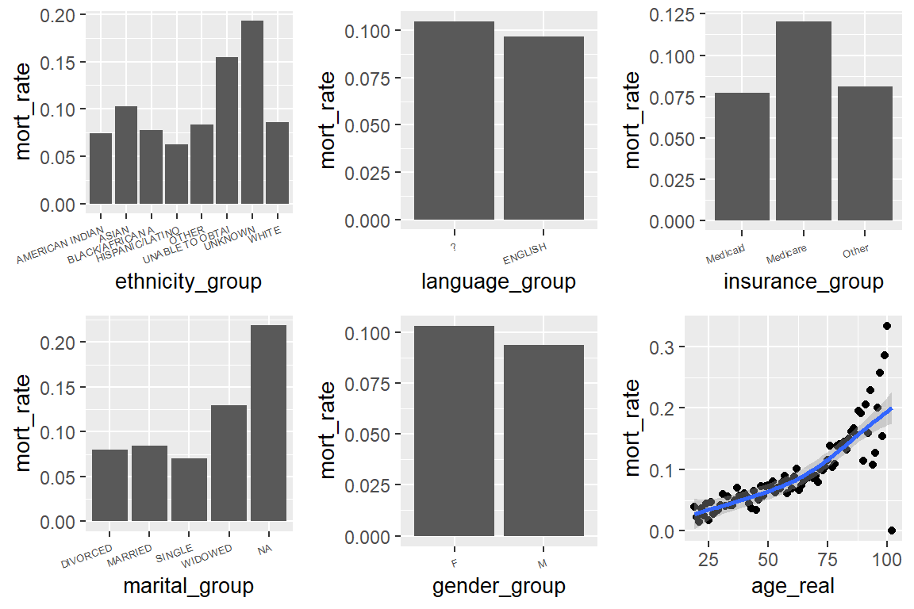
These plots compared the 30-day-mortality rate across different demographic groups. All of them basically corresponds to the summaries based on the nurmeical summaries. For the dot plot of the mort vs age, it looks like there is an exponential growth of mortality rate with age.
thirty_day_mortvs first lab measurements
#The lab measurements data in the dataset are from col 29 to col 36, only select relevant columns
summary_lab <- mimic_icu_cohort %>%
select(c(29:36, thirty_day_mort)) %>%
pivot_longer(-thirty_day_mort,
names_to = 'lab_type', values_to = 'Values') %>%
filter(!is.na(Values)) %>%
#As mentioned before, there are many extreme outliers caused by errors. Here I filtered them out by quantile.
filter(Values > quantile(Values, 0.025, na.rm = TRUE)
& Values < quantile(Values, 0.975, na.rm = TRUE)) %>%
group_by(lab_type, thirty_day_mort) %>%
summarise(number = n(),
mean = mean(Values),
sd = sd(Values)) %>%
print(width = Inf)# A tibble: 16 × 5
# Groups: lab_type [8]
lab_type thirty_day_mort number mean sd
<chr> <lgl> <int> <dbl> <dbl>
1 Bicarbonate FALSE 46423 23.2 4.21
2 Bicarbonate TRUE 4749 20.9 5.81
3 Chloride FALSE 46445 105. 6.11
4 Chloride TRUE 4757 103. 7.83
5 Creatinine FALSE 31732 1.58 1.66
6 Creatinine TRUE 3896 2.04 1.59
7 Glucose FALSE 37683 116. 23.9
8 Glucose TRUE 3168 117. 29.1
9 Hematocrit FALSE 46143 32.8 6.43
10 Hematocrit TRUE 4720 32.5 7.20
11 Potassium FALSE 46414 4.16 0.678
12 Potassium TRUE 4756 4.33 0.899
13 Sodium FALSE 46416 138. 4.71
14 Sodium TRUE 4755 138. 6.51
15 White Blood Cells FALSE 45871 11.6 6.76
16 White Blood Cells TRUE 4654 14.8 10.8 mimic_icu_cohort%>%
select(c(29:36, thirty_day_mort)) %>%
pivot_longer(-thirty_day_mort, names_to = 'lab_type', values_to = 'Values') %>%
group_by(lab_type) %>%
filter(!is.na(Values)) %>%
#As mentioned before, there are many extreme outliers caused by errors. Here I filtered them out by quantile.
filter(Values > quantile(Values, 0.025, na.rm = TRUE)
& Values < quantile(Values, 0.975, na.rm = TRUE)) %>%
ungroup() %>%
ggplot() +
geom_boxplot(mapping = aes(x = thirty_day_mort, y = Values)) +
labs(x = 'Death Status at 30 days') +
ggtitle('First Lab Measurements in Two Groups')+
facet_wrap(~ lab_type, scales = "free")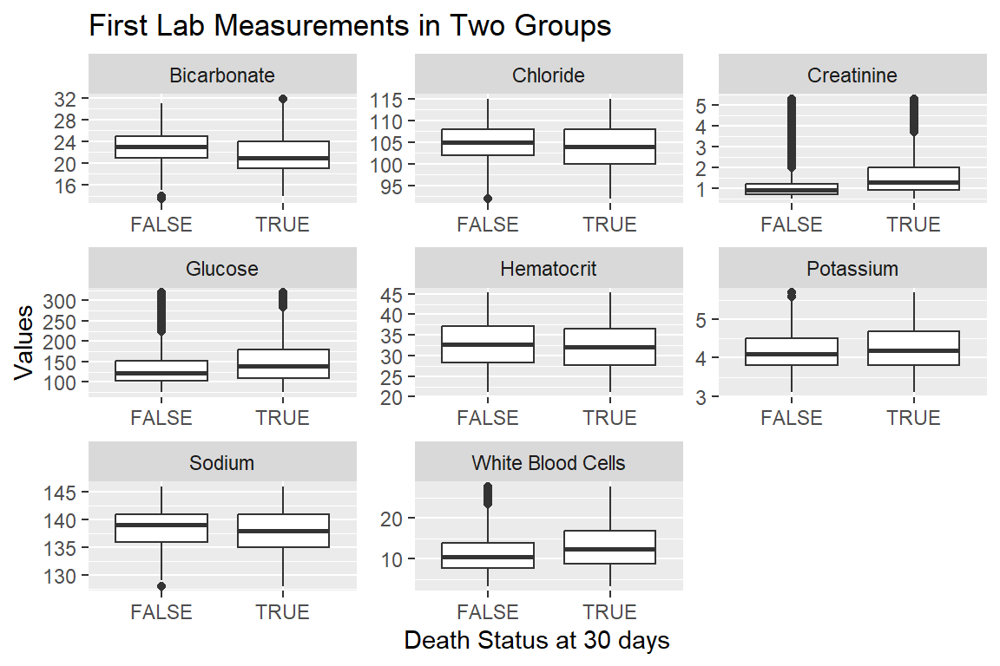
For every lab measurement type, there seems to be a difference between the mean measurements of the TRUE and FALSE group. The more obvious ones are bicarbonate, creatinine, glucose and sodium. In bicarbonate the mortality group has a much lower mean bicarbonate level than the other. While in Creatinine group the mortality group has a higher level than the non-mortality group.
thirty_day_mortvs first vital measurements
#The lab measurements data in the dataset are from col 29 to col 36, only select relevant columns
summary_vital <- mimic_icu_cohort %>%
select(c(37:42)) %>%
pivot_longer(-thirty_day_mort, names_to = 'vital_type', values_to = 'Values') %>%
filter(!is.na(Values)) %>%
#As mentioned before, there are many extreme outliers caused by errors. Here I filtered them out by quantile.
filter(Values > quantile(Values, 0.025, na.rm = TRUE)
& Values < quantile(Values, 0.975, na.rm = TRUE)) %>%
group_by(vital_type, thirty_day_mort) %>%
summarise(number = n(),
mean = mean(Values),
sd = sd(Values)) %>%
print(width = Inf)# A tibble: 10 × 5
# Groups: vital_type [5]
vital_type thirty_day_mort number mean sd
<chr> <lgl> <int> <dbl> <dbl>
1 Heart Rate FALSE 47300 86.6 18.9
2 Heart Rate TRUE 5094 92.7 21.4
3 Non Invasive Blood Pressure mean FALSE 47074 82.5 17.4
4 Non Invasive Blood Pressure mean TRUE 4875 79.9 20.1
5 Non Invasive Blood Pressure systolic FALSE 41545 118. 18.5
6 Non Invasive Blood Pressure systolic TRUE 4316 113. 21.4
7 Respiratory Rate FALSE 39312 20.0 5.36
8 Respiratory Rate TRUE 4655 22.2 6.22
9 Temperature Fahrenheit FALSE 47119 98.1 2.22
10 Temperature Fahrenheit TRUE 4694 97.5 5.37mimic_icu_cohort %>%
select(c(37:42)) %>%
pivot_longer(-thirty_day_mort, names_to = 'vital_type', values_to = 'Values') %>%
group_by(vital_type) %>%
filter(!is.na(Values)) %>%
#As mentioned before, there are many extreme outliers caused by errors. Here I filtered them out by quantile.
filter(Values > quantile(Values, 0.025, na.rm = TRUE)
& Values < quantile(Values, 0.975, na.rm = TRUE)) %>%
ungroup() %>%
ggplot() +
geom_boxplot(mapping = aes(x = thirty_day_mort, y = Values)) +
labs(x = 'Death Status at 30 days') +
ggtitle('First Vital Measurements in Two Groups')+
facet_wrap(~ vital_type, scales = "free")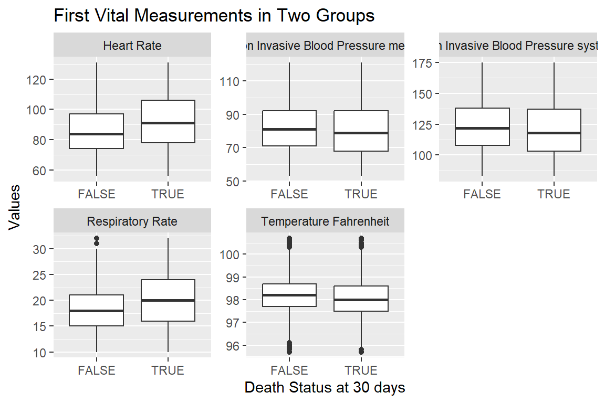
All the vital measurements are having a difference between the mort and non-mort groups. For example, the patients who died in 30 days have a higher heart rate and respiratory rate measurement.
thirty_day_mortvs first ICU unit
summary_unit <- mimic_icu_cohort %>%
select(c(first_careunit, thirty_day_mort)) %>%
count(first_careunit, thirty_day_mort) %>%
group_by(first_careunit) %>%
mutate(percent = n / sum(n) * 100) %>%
print(width = Inf)# A tibble: 18 × 4
# Groups: first_careunit [9]
first_careunit thirty_day_mort n
<chr> <lgl> <int>
1 Cardiac Vascular Intensive Care Unit (CVICU) FALSE 8834
2 Cardiac Vascular Intensive Care Unit (CVICU) TRUE 249
3 Coronary Care Unit (CCU) FALSE 5377
4 Coronary Care Unit (CCU) TRUE 704
5 Medical Intensive Care Unit (MICU) FALSE 8819
6 Medical Intensive Care Unit (MICU) TRUE 1361
7 Medical/Surgical Intensive Care Unit (MICU/SICU) FALSE 7765
8 Medical/Surgical Intensive Care Unit (MICU/SICU) TRUE 1045
9 Neuro Intermediate FALSE 1283
10 Neuro Intermediate TRUE 28
11 Neuro Stepdown FALSE 613
12 Neuro Stepdown TRUE 12
13 Neuro Surgical Intensive Care Unit (Neuro SICU) FALSE 1157
14 Neuro Surgical Intensive Care Unit (Neuro SICU) TRUE 221
15 Surgical Intensive Care Unit (SICU) FALSE 7349
16 Surgical Intensive Care Unit (SICU) TRUE 871
17 Trauma SICU (TSICU) FALSE 6278
18 Trauma SICU (TSICU) TRUE 647
percent
<dbl>
1 97.3
2 2.74
3 88.4
4 11.6
5 86.6
6 13.4
7 88.1
8 11.9
9 97.9
10 2.14
11 98.1
12 1.92
13 84.0
14 16.0
15 89.4
16 10.6
17 90.7
18 9.34summary_unit %>%
mutate(short_name = gsub(".*\\((.*)\\).*", "\\1", first_careunit)) %>%
arrange(n) %>%
ggplot() +
geom_col(mapping = aes(x = short_name, y = n, fill = thirty_day_mort),
position = "fill") +
theme(axis.text.x = element_text(angle = 20, hjust = 1))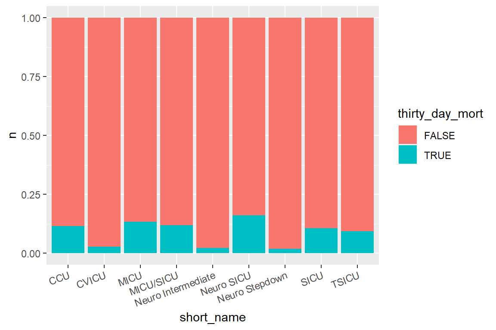
The Neuron SICU has the highest mortality rate among all types of ICU, while CVICU, Neuro Intermediate and Neuro Stepdown have the lowest death rates among all of them.